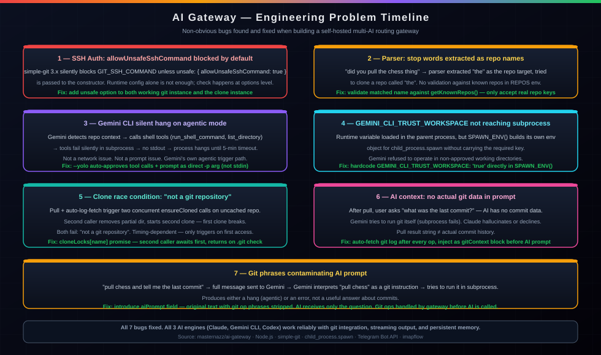

Writeup | AI Automation & Infrastructure
Building a Self-Hosted Multi-AI Gateway
A self-hosted Node.js service that routes Telegram messages and emails to Claude, Gemini CLI, or OpenAI Codex — with git integration, live streaming replies, and shared memory. This covers the architecture, the non-obvious bugs, and what it took to get all three AI CLIs working reliably.

The Problem
Running AI CLI tools from a desktop is fine when you're at your computer. From a phone, on the go, or via email, it's not — there's no clean way to reach them. SSH into a server, type a long prompt, wait for output, copy it back: that workflow doesn't scale and doesn't work from mobile at all.
The idea: a persistent gateway service on the homelab that receives messages from Telegram or email, routes them to whichever AI CLI makes sense, and sends the response back. Git operations (pull, push, commit) should also work inline — send "pull my-docs" in the same message as a question and the AI should have the actual commit data when it answers.
That's a simple concept. Getting all three AI CLIs to work reliably in that environment turned out to involve a lot of non-obvious failure modes.
Architecture
- Runtime: Node.js 20 LTS on a Proxmox LXC, exposed to the internet via Cloudflare Tunnel. Express handles the Telegram webhook; a polling loop handles IMAP.
- AI engines: Each CLI is spawned as a child process with
child_process.spawn. A 5-minute timeout kills hung processes. - Git:
simple-gitwrapping the system git binary, with SSH key auth passed viaGIT_SSH_COMMANDin the subprocess environment. - Memory: A flat
memory.mdfile prepended to every prompt. Per-channel conversation history stored as JSON, compacted automatically at 20 entries. - Security: Telegram access locked to a single allowed user ID. Email filtered by domain allowlist. Webhook URL contains a secret token checked server-side.
Message Processing Flow
- Incoming message →
parser.jsdetects engine prefix, verbose flag, and git operation phrases. - Git ops run first via
git.js. After each pull, a git log is auto-fetched and included as context. memory.jsbuilds the full prompt: persistent memory + channel history + git context + user message.runner.jsspawns the CLI subprocess. Streaming variant callsonChunkon each stdout write.- Telegram handler edits the reply message every 1.5s. Final edit on process close.
Non-Obvious Engineering Problems
allowUnsafeSshCommand blocked by default
simple-git 3.x blocks the GIT_SSH_COMMAND environment variable unless you explicitly
opt in with unsafe: { allowUnsafeSshCommand: true } in the constructor options.
Setting the env var via .env() doesn't bypass this — the check happens at the options
level before any env is read. Every git operation failed with "core.sshCommand is not permitted
without enabling allowUnsafeSshCommand" until the option was passed to both the working git
instance and the separate instance used for cloning.
Parser extracting stop words as repo names
The initial git op parser matched any word that followed a git verb — so "did you pull the chess
thing" extracted "the" as the repo name and tried to find a repo called "the". Fixed by validating
matched repo names against the configured REPOS env var. Only names that match a known
repo key are treated as git targets; everything else is left in the user message.
Silent hang on repo-related context
Gemini CLI has an agentic mode that activates when it detects certain context — repo names,
file paths, directory references. In agentic mode it calls shell tools (run_shell_command,
list_directory) to gather context before responding. Those tool calls fail silently
in the subprocess environment, producing no stdout and no exit. The process just hangs until the
5-minute timeout kills it.
Two fixes were required together. First, --yolo auto-approves all tool calls so
nothing blocks on confirmation. Second, the prompt is passed as a direct -p argument
instead of stdin — passing via stdin triggers the agentic path; the direct arg approach bypasses it.
Both were required; either alone didn't fully solve it.
GEMINI_CLI_TRUST_WORKSPACE not reaching the subprocess
Gemini requires GEMINI_CLI_TRUST_WORKSPACE=true to operate in directories it hasn't
approved. This env var was set in the gateway's .env file and loaded by dotenv —
but the subprocess spawned by child_process.spawn uses its own environment constructed
in SPAWN_ENV(). The fix was to hardcode it directly in that function so it's always
present regardless of what the parent process loaded.
Clone race condition causing "not a git repository"
A single message that triggers both a git pull and an auto-log-fetch on an uncached repo causes
two concurrent ensureCloned calls. The first checks for .git, doesn't
find it, and starts cloning. The second also checks, doesn't find it yet, removes the partially-created
directory, and starts a second clone — leaving the first clone in a broken state. Both then fail
with "not a git repository."
Fixed with a per-repo in-memory promise lock (cloneLocks[name]). The first caller
stores its clone promise in the lock. The second caller finds the lock, awaits the existing promise,
then returns — so the clone only ever happens once, and subsequent callers just wait for it.
AI asked about git with no actual git data
After a pull, if the user asked "what was the last commit?", the AI had no commit data — it was just told the pull result string. Gemini would respond by trying to run git itself inside the subprocess, which fails. Claude would hallucinate or say it didn't have the information.
Fixed by auto-fetching a git log after every git op and injecting it into the prompt
as a "Git context" block before the user's question reaches the AI. Now the AI has the actual commit
history and can answer from it without needing to run git.
Git phrases sent to Gemini causing re-run
When the full user message (e.g. "pull chess and tell me the last commit") was passed to Gemini,
Gemini interpreted "pull chess" as a git instruction and tried to run it inside the subprocess.
The fix introduces an aiPrompt field — the original user text with git operation
phrases stripped out. The AI receives only the question part; the git ops are handled by the gateway
before the AI is called.
Real Tasks Completed With It
Operational use on the homelab after the bugs were fixed.
Git Repo Management
Pull, push, and commit to multiple SSH-authenticated repos directly from Telegram. Git log auto-injected so the AI can answer questions about recent commits without running git itself.
Mobile AI Access
Full access to Claude, Gemini CLI, and Codex from a phone via Telegram. Long-running tasks stream back in real time as the message updates live.
Email-Driven Queries
Send an email to the gateway address and get an AI response back. Domain allowlist keeps it private. Supports the same engine selection and git ops as Telegram.
Persistent Context
Shared memory file and per-channel history mean the AI remembers facts across sessions without repeating them every message. memory: fact saves to the shared file immediately.
Using It
Examples of the message format.
Engine Selection & Git Ops
# Default engine (Claude)
what's the fastest way to flatten a nested dict in python?
# Gemini CLI
gemini: pull homelab-docs and summarize what changed
# Codex
codex: write a bash one-liner to find large files
# Verbose mode (streams debug output too)
verbose: pull my-docs and diff it
# Git only, no AI response
pull chess
push homelab-docs
# Save to shared memory
memory: always prefer YAML over JSON for config filesDeploying It
Runs as a Node.js process on a Proxmox LXC. Key environment variables:
TELEGRAM_BOT_TOKEN— from @BotFatherTELEGRAM_ALLOWED_USER_ID— your numeric Telegram IDWEBHOOK_SECRET— random string embedded in webhook URLREPOS—name:git@github.com:user/repo.gitpairsGITHUB_SSH_KEY— path to SSH private key for git authMEMORY_FILE/HISTORY_DIR— persistence paths
Claude, Gemini CLI, and Codex CLIs need to be installed and authenticated on the same system. The gateway spawns them by name — they need to be on PATH.